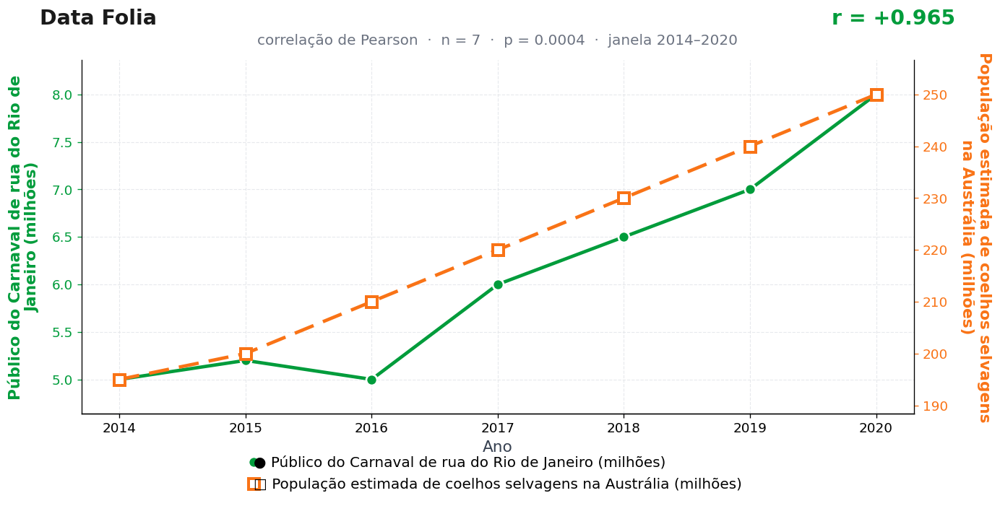

Post de 03/08/2026
A teoria
O Carnaval do Rio é um tomada das ruas. Ruas, esquinas e avenidas se enchem em uma coreografia que transforma espaço disponível em presença coletiva.
No outback australiano, os coelhos respondem ao mesmo instinto de marcar território. Eles leem a abundância de espaço como convite, multiplicam rotas e transformam paisagem em passagem.
A ligação é a aglomeração da festa. O Rio mostra como uma multidão toma a rua; os coelhos mostram como uma população toma o campo. O hemisfério sul trabalha com a mesma lógica de expansão, só muda a fantasia.
A CSIRO ainda não incluiu "bloco de rua" entre os fatores oficiais de proliferação de coelhos. Na nossa avaliação, é uma lacuna metodológica grave, que o presente estudo se orgulha de não corrigir.
A teoria é ficção; a correlação é real: r = 0,96 (n = 7, p < 0,001).
Os dados por trás

- Público do Carnaval de rua do Rio de Janeiro (milhões) — 7 pontos anuais, período 2014–2020. Fonte: RioTur / SetRio — estimativas oficiais.
- População estimada de coelhos selvagens na Austrália (milhões) — 7 pontos anuais, período 2014–2020. Fonte: CSIRO / Department of Agriculture (estimativas).
Como as correlações deste site são encontradas — e por que você não deve confiar nelas — está explicado na nossa metodologia.
Por que isso acontece?
As duas séries só fazem uma coisa entre 2014 e 2020: crescer. O público do Carnaval de rua do Rio sobe de 5 para 8 milhões; a população estimada de coelhos na Austrália, de 195 para 250 milhões. Duas curvas monotônicas na mesma direção geram correlação alta automaticamente — o r = 0,97 mede o paralelismo das subidas, não uma ponte transpacífica.
Repare também na textura dos números: 195, 200, 210, 220, 230, 240, 250 de um lado; 5,0, 5,2, 6,0, 6,5, 7,0, 8,0 do outro. Ninguém conta coelho selvagem um a um, nem folião bloco a bloco — são estimativas arredondadas e suavizadas por órgãos oficiais. Séries suavizadas têm menos ruído do que a realidade, e menos ruído significa correlações artificialmente infladas.
Tendência comum + dados estimados + 7 pontos anuais: a receita completa da coincidência fotogênica. Serve para coelhos, serve para quase tudo que cresce junto com a década.
Post de 03/08/2026 · publicado também no Instagram @datafolia.